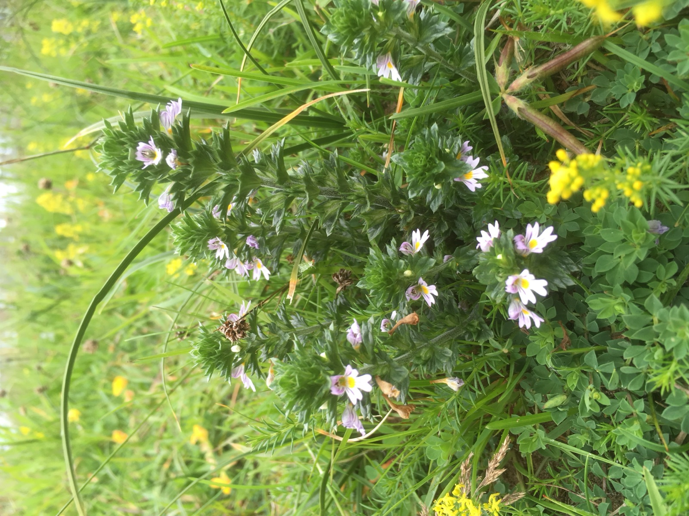
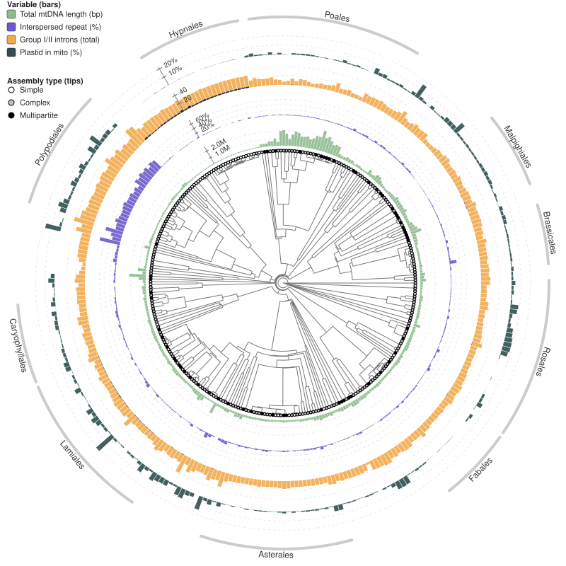

Anglia Ruskin University · Cambridge, UK
Plant evolution, read from the field and the genome.
The Brown Lab uses comparative genomics to understand how plant genome sequences evolve, from single mutations to whole-genome duplications, and builds the open-source tools needed to compare thousands of genomes at once.

Source: Google Scholar, October 2026.
News
Latest from the lab
-
{% for post in site.posts limit: 3 %}
-
{{ post.title }}
{{ post.summary | default: post.excerpt | strip_html | truncatewords: 30 }}
{% endfor %}
Research
Four questions we are working on
Somatic mutation in plants
How fast do plants accumulate mutations as they grow, and does a thousand-year-old tree differ from an annual weed? Fundamental rates, measured with long-read sequencing.
Plant organelle genomes
Plant mitochondria are recombining, repeat-rich and wildly variable in size. We build tools to assemble them and compare their structure across the tree of life.
Telomeres across the tree of life
Using tidk on thousands of Darwin Tree of Life genomes to reveal far more variation in telomeric repeats than textbooks suggest.
Auto- or allopolyploid?
Polyploids are usually forced into one of two boxes. ploidyspec uses k-mers from haplotype-resolved assemblies to place them on a continuous spectrum, measuring how diverged each chromosome's copies are.
Selected publications
Recent work
-
tidk: a toolkit to rapidly identify telomeric repeats from genomic datasets
Bioinformatics 41, btaf049, 2025
-
Oatk: a de novo assembly tool for complex plant organelle genomes
Genome Biology 26, 235, 2025
-
The emerging importance of cross-ploidy hybridisation and introgression
Molecular Ecology 33(8), e17315, 2024
-
Genetic factors predict hybrid formation in the British flora
Proceedings of the National Academy of Sciences 120(16), e2220261120, 2023

Interactive figures
Data you can explore
Our papers come with interactive figures you can hover, zoom and interrogate, like this map of mitochondrial assembly complexity across hundreds of land plants.
Open-source software
Tools that run on thousands of genomes
Fast, tested and mostly written in Rust, used across the Darwin Tree of Life, with fasta_windows running in production at the Wellcome Sanger Institute.
Telomere identification toolkit. Discovers and maps telomeric repeats across whole genomes, built to survey the thousands of assemblies coming out of the Darwin Tree of Life.
Command line interface for Genomes on a Tree. Query genome size, chromosome number, assembly status and sequencing-project metadata for any taxon across eukaryotes.
De novo assembly of complex plant mitochondrial and plastid genomes from HiFi reads. Co-developed with Chenxi Zhou and Richard Durbin.
A Graphical Fragment Assembly toolkit for plant organelles. Uses graph algorithms to resolve tangled mitochondrial and chloroplast assembly graphs into linear sequences.
Opportunities
Curious about plants, genomes, or both?
We welcome enquiries from prospective PhD students, postdoctoral fellows, project students and collaborators.